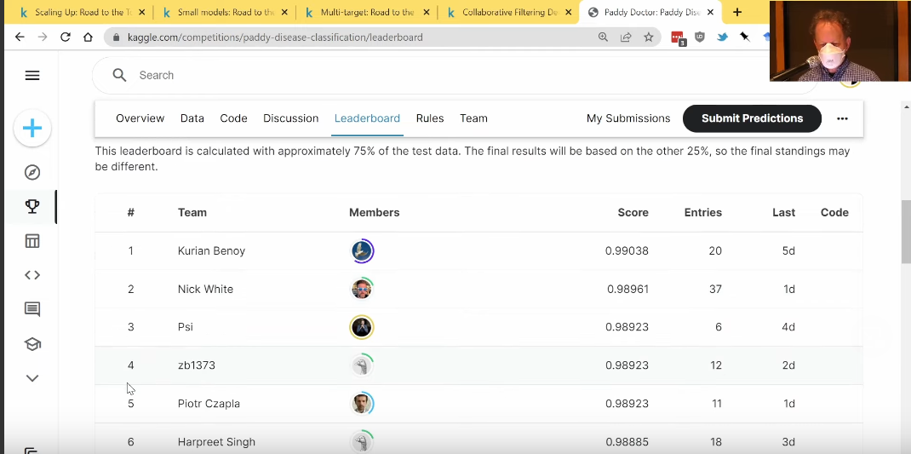

Lesson Notebooks
There are four notebook covering Paddy Disease Competition, and I feel each of these notebooks are excellent:
How was Paddy competiton for me?
This competition is still ongoing at the time of writing. Yet during one month break during which Jeremy’s live-coding sessions were held. I got some time to play with Paddy disease classification competition with this competition with other fastai friends also.
At the start of lesson 7, Jeremy said some kind words to Nick and me which can be found in below youtube video. I am extremely lucky to learn from such a great teacher. Without these four notebooks and Jeremy’s live-coding sessions, it wouldn’t have been possible.

I am not going in detail on this lesson, as I feel the introduction notebooks have covered everything so well. So signing off early this time.